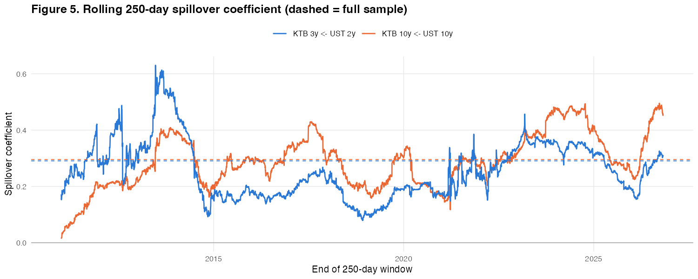

조건은 충격보다 먼저 알려진 값(한국 t일 마감)만 쓴다. 따라서 회귀의 어떤 설명변수도 목표 Δy(t+1)보다 뒤의 정보를 담지 않는다. 미국 휴장일은 그날 변화가 0으로 들어가고, 결측은 보간하지 않는다. (b)는 02_analysis.R가 stopifnot으로 확인하는 정렬 사례다.
출처: paper_figure1_timing.svg (05_paper_tables.R가 생성)
보고서 구성안 기준 · 수치는 output/Team_result.RData의 res$paper에서 자동 생성 · 2026-11-24
조건은 충격보다 먼저 알려진 값(한국 t일 마감)만 쓴다. 따라서 회귀의 어떤 설명변수도 목표 Δy(t+1)보다 뒤의 정보를 담지 않는다. 미국 휴장일은 그날 변화가 0으로 들어가고, 결측은 보간하지 않는다. (b)는 02_analysis.R가 stopifnot으로 확인하는 정렬 사례다.
출처: paper_figure1_timing.svg (05_paper_tables.R가 생성)
| 변수 | N | 평균 | 표준편차 | 최소 | 중앙값 | 최대 |
|---|---|---|---|---|---|---|
| 국고채 3년 일별 변화 Δy (bp) | 4,140 | -0.018 | 3.859 | -26.80 | 0.00 | 34.90 |
| 국고채 10년 일별 변화 Δy (bp) | 4,140 | -0.034 | 4.093 | -22.00 | 0.00 | 32.10 |
| 미 2년 충격 s (bp) | 4,140 | 0.084 | 4.603 | -57.00 | 0.00 | 34.00 |
| 미 10년 충격 s (bp) | 4,140 | 0.027 | 5.401 | -30.00 | 0.00 | 29.00 |
| |국고채 1년 − 기준금리| (%p) | 4,140 | 0.264 | 0.241 | 0.00 | 0.20 | 1.50 |
| 외국인 3년 선물 누적 순매수 (250일 z) | 4,140 | 0.109 | 1.334 | -3.28 | 0.32 | 3.28 |
| log VIX | 4,140 | 2.859 | 0.310 | 2.21 | 2.82 | 4.42 |
| 통화정책형 날 비율 mon = 1 (3년물 짝) | 44.0% | |||||
| 통화정책형 날 비율 mon = 1 (10년물 짝) | 43.3% | |||||
| 단기 주도 날 비율 FLAT = 1 (3년물 짝) | 37.2% | |||||
| 단기 주도 날 비율 FLAT = 1 (10년물 짝) | 26.2% |
Δy는 한국 t일 종가 → t+1일 종가 변화, s는 그사이 끝난 미국 거래일 변화의 합이다. 조건은 한국 t일 마감 때 알려진 값이다. 비율은 s ≠ 0인 날 기준이다.
출처: paper_table1.csv
| 기준 모형 (1) | 상승·하락 분리 | 경제적 크기 | |||||||
|---|---|---|---|---|---|---|---|---|---|
| 목표 (← 충격) | β₀ (t) | ρ (t) | R² | N | β 상승일 | β 하락일 | 같음 p | 미 10bp → bp | Δy 표준편차 (bp) |
| 3년물 (← 미 2년) | 0.291 (16.7) | -0.068 (-3.6) | 0.123 | 4,140 | 0.294 | 0.288 | 0.911 | 2.9 | 3.9 |
| 10년물 (← 미 10년) | 0.296 (19.2) | -0.077 (-4.4) | 0.154 | 4,140 | 0.279 | 0.312 | 0.494 | 3.0 | 4.1 |
식 (1): Δy(t+1) = α + β₀ s(t) + ρ Δy(t) + δ′D(t) + ε. D는 휴장·FOMC·금통위 더미. 괄호 안은 Newey–West(시차 9) t값. '같음 p'는 β 상승일 = β 하락일의 HAC Wald 검정.
출처: paper_table2.csv

그림 안의 영문 제목은 본문 작성 때 지운다.
출처: figure5_rolling_beta.png
| 설정 A: trend 있음 | 설정 B: trend 없음 | ||||||
|---|---|---|---|---|---|---|---|
| 가설 (예측 부호 +) | 계수 | p | Holm p | 계수 | p | Holm p | 판정 |
| 3년물 (← 미 2년) | |||||||
| P1 기대: s × |kr1y_gap| | 0.010 | 0.574 | 1.000 | 0.008 | 0.663 | 1.000 | 기각 못 함 |
| P2 수급: s⁺ × fut3 | -0.063 | 0.032 | 0.128 | -0.058 | 0.053 | 0.210 | 기각 못 함 |
| P3 위험: s × log VIX | -0.010 | 0.578 | 1.000 | -0.007 | 0.670 | 1.000 | 기각 못 함 |
| 결합 Wald χ²(3): 세 계수 = 0 | 5.64 | 0.131 | 0.131 | 4.45 | 0.217 | 0.217 | |
| 10년물 (← 미 10년) | |||||||
| P1 기대: s × |kr1y_gap| | -0.024 | 0.068 | 0.204 | -0.026 | 0.087 | 0.262 | 기각 못 함 |
| P2 수급: s⁺ × fut3 | -0.075 | 0.004 | 0.022 | -0.061 | 0.030 | 0.148 | 설정 의존 |
| P3 위험: s × log VIX | -0.034 | 0.009 | 0.044 | -0.035 | 0.003 | 0.016 | 유의 (예측과 반대 부호) |
| 결합 Wald χ²(3): 세 계수 = 0 | 28.01 | 3.6e-06 | 7.2e-06 | 26.37 | 8.0e-06 | 1.6e-05 | |
식 (2)의 상호작용 계수. 조건은 표준화했으므로 계수는 조건 1 표준편차당 전이 계수의 변화다. P2는 s를 상승(s⁺)·하락(s⁻)으로 나눈 식에서 s⁺ 항이다. 양측 검정, Newey–West(시차 9). Holm은 설정마다 6개 검정(가설 3 × 만기 2)에 적용한다. 굵게 = Holm p < 0.05. 판정 규칙: A·B 모두 통과하면 '유의', 하나만 통과하면 '설정 의존'. 결합 Wald 행의 계수 칸은 χ² 통계량이고, Holm은 만기 2개에 적용한다.
출처: paper_table3.csv, paper_table3_joint.csv
| 3년물 | 10년물 | ||||||||
|---|---|---|---|---|---|---|---|---|---|
| 검정 (미리 정한 예측) | 효과 지표 | 효과 | 통계량 | p | Holm p | 효과 | 통계량 | p | Holm p |
| N2 s × FLAT > 0 (단측 t) | s × FLAT 계수 | -0.025 | -0.73 | 0.767 | 0.767 | 0.121 | 3.42 | 3.1e-04 | 0.002 |
| N3 c_m > c_g (부호 붙인 LR) | c_m − c_g | 0.294 | 0.78 | 0.217 | 0.434 | 1.096 | 2.18 | 0.014 | 0.072 |
| N5 M4 vs M1 (Clark–West) | R²_OOS | 0.24% | 1.45 | 0.074 | 0.221 | 1.30% | 4.38 | 6.0e-06 | 4.8e-05 |
| N7 M4 vs M2 (GW 무조건부, 단측) | R²_OOS | 1.82% | 1.70 | 0.045 | 0.179 | 1.56% | 2.34 | 0.010 | 0.058 |
mon = 1은 미국 금리 변화와 같은 날 NASDAQ 수익률의 부호가 반대인 날(통화정책형, Hoek, Kamin & Yoldas 2022의 일별 근사), FLAT = 1은 |Δ미 2년| > |Δ미 10년|인 날이다. N3는 GARCH(1,1)-X 분산식에 s²·mon과 s²·(1 − mon)을 넣은 모형(Student-t). N5·N7의 R²_OOS = 1 − MSFE(M4)/MSFE(비교 모형), 1,000일 롤링. M1 = 기준, M2 = M1 + 조건 3개, M4 = M1 + mon. Holm은 8개 검정(4 × 만기 2)에 함께 적용한다. 굵게 = Holm p < 0.05. N3의 성격별 c: 10년물 c_m 1.77 (0.67), c_g 0.67 (0.40); 3년물 c_m 0.46, c_g 0.17. 1부(설정 A) 6개와 합친 14개 Holm에서도 10년물 N2(0.004)와 N5(8.4e-05)는 통과한다.
출처: paper_table4.csv, paper_table4_n3.csv
| 미국 금리 10bp 충격일 때 다음 날 국고채 변화 (bp) | 3년물 | 10년물 |
|---|---|---|
| 기준 전이 (미 10bp 충격) | 2.91 | 2.96 |
| 성장형 날 (mon = 0) | 2.43 | 2.38 |
| 통화정책형 날 (mon = 1) | 3.44 | 3.81 |
| P1 |kr1y_gap| +1 표준편차일 때 변화 | 0.10 | -0.24 |
| P2 외국인 선물 +1 표준편차일 때 변화 (미 금리 상승일) | -0.63 | -0.75 |
| P3 log VIX +1 표준편차일 때 변화 | -0.10 | -0.34 |
| 참고: 국고채 일별 변화의 표준편차 | 3.86 | 4.09 |
기준 전이 = 10 × β₀(표 2). 성장형·통화정책형 = 10 × 각 날의 전이 계수(s × mon을 넣은 식 N1. 효과를 본 뒤 정한 식이라 확증 검정에는 쓰지 않는다). 조건 행 = 10 × 상호작용 계수(설정 A, 표 3). 조건 효과와 성격 효과의 크기 비교는 검정이 아니다(직접 비교 N7은 표 4).
출처: paper_table5.csv
| P3: s × log VIX | P2: s⁺ × fut3 | 참고: s × fut3 (대칭) | ||||
|---|---|---|---|---|---|---|
| 설정 (10년물) | 계수 | p (Holm) | 계수 | p (Holm) | 계수 | p |
| 본 설정 A (trend) | -0.034 | 0.009 (0.044) | -0.075 | 0.004 (0.022) | – | – |
| 설정 B (trend 없음) | -0.035 | 0.003 (0.016) | -0.061 | 0.030 (0.148) | – | – |
| 설정 C (A + mon 통제) | -0.029 | 0.020 (0.100) | -0.070 | 0.006 (0.034) | – | – |
| 설정 D (B + mon 통제) | -0.028 | 0.015 (0.092) | -0.057 | 0.032 (0.128) | – | – |
| R1 충격을 미 2년으로 | -0.037 | 0.033 | – | – | -0.030 | 0.063 |
| R1 충격을 미 3년으로 | -0.039 | 0.014 | – | – | -0.024 | 0.114 |
| R1 충격을 미 5년으로 | -0.030 | 0.050 | – | – | -0.020 | 0.136 |
| R3 FOMC ±3일 제외 | -0.056 | 0.027 | – | – | -0.007 | 0.692 |
| R4 2010–2019 (trend 없음) | -0.021 | 0.226 | – | – | -0.028 | 0.121 |
| R4 2020–2026 (trend 없음) | -0.063 | 1.4e-05 | – | – | -0.015 | 0.457 |
| R5 1% 윈저화 | -0.034 | 0.010 | – | – | -0.019 | 0.144 |
| R6 조건 5일 평균 | -0.036 | 0.009 | – | – | -0.023 | 0.101 |
| R7 부호 있는 gap, VIX 대신 환율 변동성 | – | – | – | – | -0.028 | 0.052 |
| R8 H2 조건을 st_spread로 | -0.028 | 0.024 | – | – | – | – |
| R9 2012-05-31 이후 | -0.043 | 7.2e-04 | – | – | -0.029 | 0.071 |
| R10 s × |s| 추가 | -0.058 | 3.8e-05 | -0.046 | 0.071 | -0.014 | 0.320 |
| R11 연도 내 (s × 연도, trend 없음) | -0.021 | 0.185 | -0.068 | 0.008 | -0.013 | 0.370 |
| R12 fut3 z 창 120일, 설정 A | -0.034 | 0.007 (0.040) | -0.055 | 0.023 (0.117) | – | – |
| R12 fut3 z 창 120일, 설정 B | -0.036 | 0.002 (0.012) | -0.038 | 0.153 (0.458) | – | – |
| R12 fut3 z 창 500일, 설정 A | -0.039 | 0.002 (0.010) | -0.057 | 0.017 (0.084) | – | – |
| R12 fut3 z 창 500일, 설정 B | -0.042 | 2.6e-04 (0.002) | -0.037 | 0.128 (0.513) | – | – |
괄호 안 Holm p는 해당 설정의 1부 6개 검정 묶음 기준이며, 1부 설정과 R12에만 있다. R1–R9는 fut3를 대칭(s × fut3)으로 넣은 식이라 s⁺ 항이 없다. R1의 미 2년 충격은 10년물에 짧은 만기 충격을 넣은 것이다. 3년물은 어떤 설정에서도 조건 효과가 Holm을 통과하지 않는다.
출처: paper_table6.csv